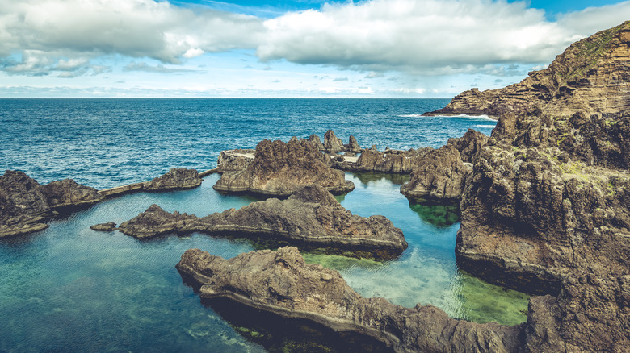
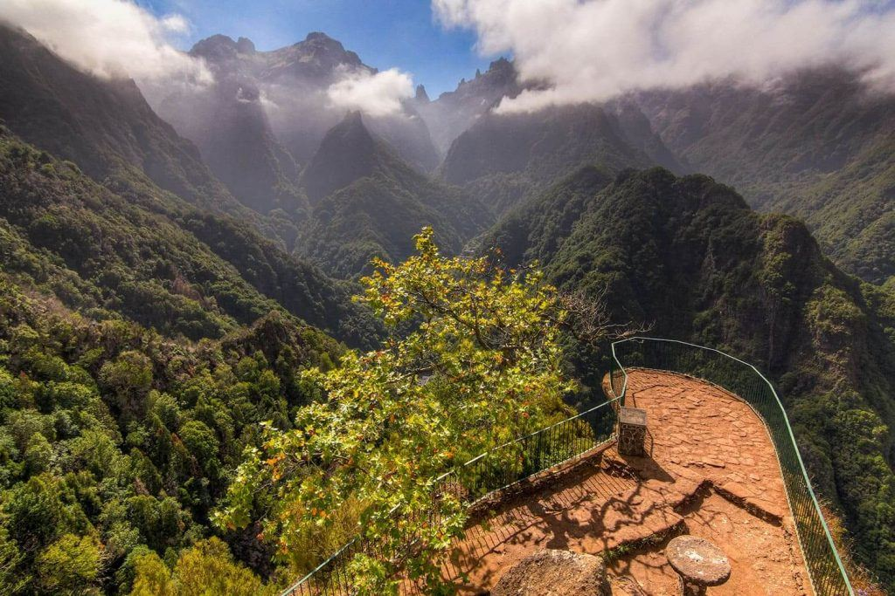
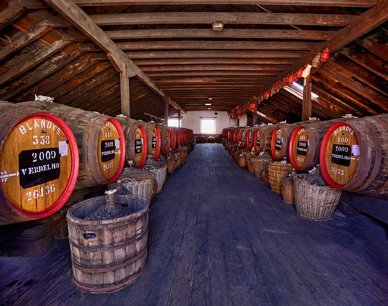
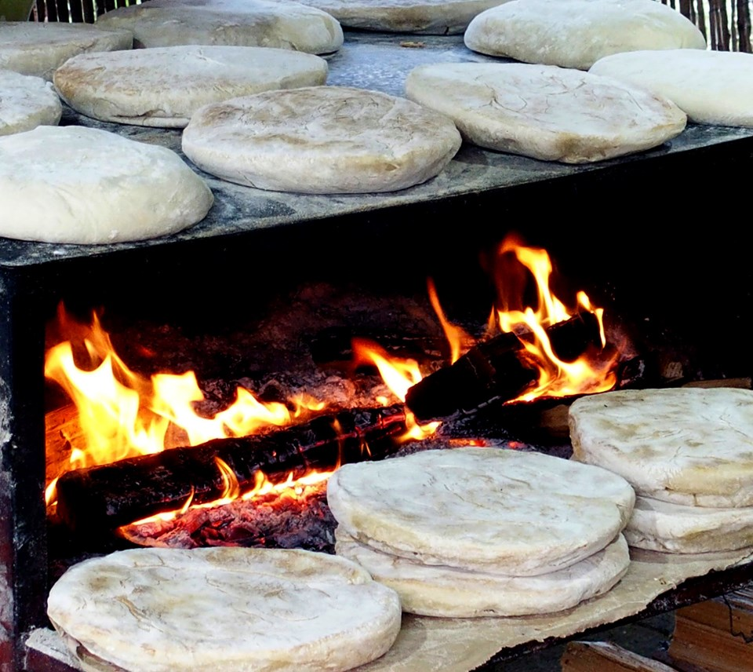
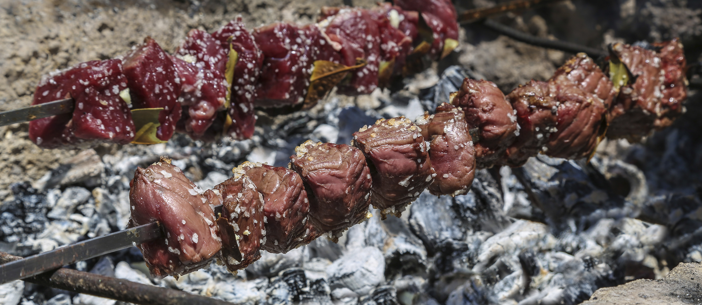
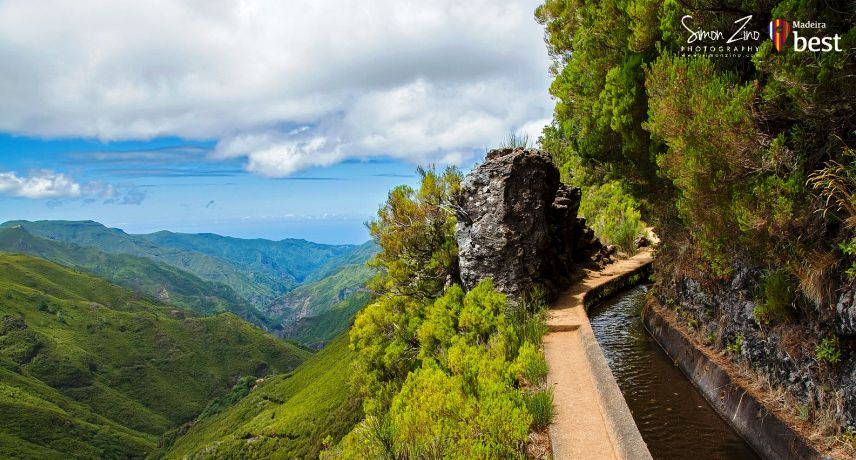
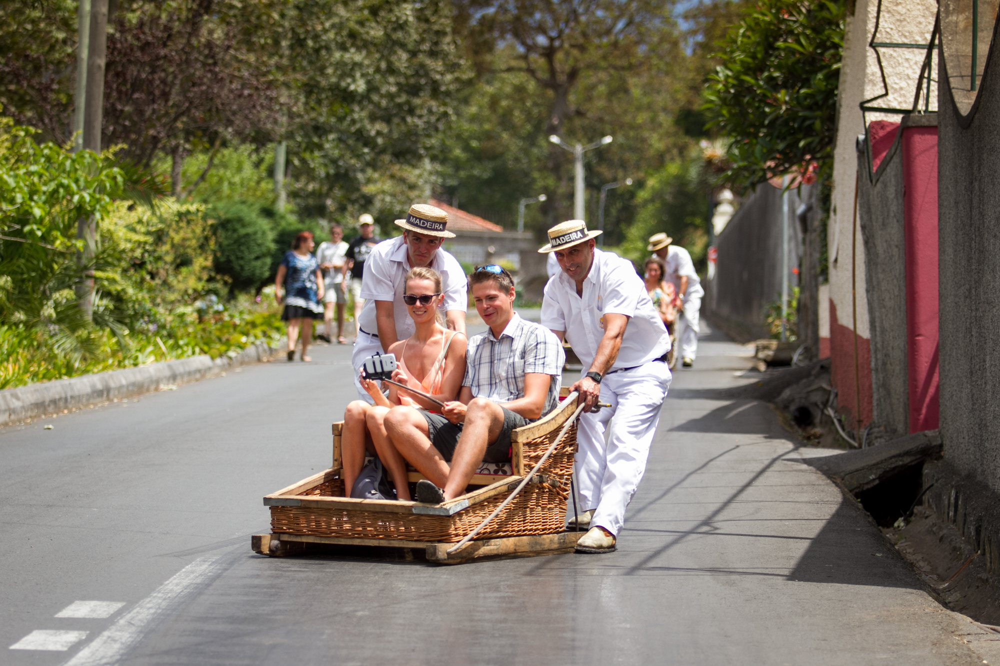
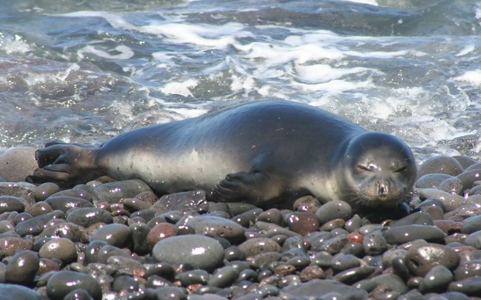

The island is famous for its fortified wine, which can age for decades and is still enjoyed worldwide.

A traditional Madeiran flatbread usually served warm with garlic butter.

Skewered beef rubbed with bay leaves and grilled over wood, a local BBQ favorite.

Scenic hiking canals
Madeira has over 2,000 km of levadas (irrigation canals) that double as scenic hiking trails.

Speed down the hill
Visitors can ride down from Monte in wicker toboggans steered by two drivers — a thrilling tradition since the 19th century.

Rare monk seals
Madeira is a great spot to see lobo marinho (Mediterranean monk seals), one of Europe’s rarest marine mammals, resting on rocky shores.